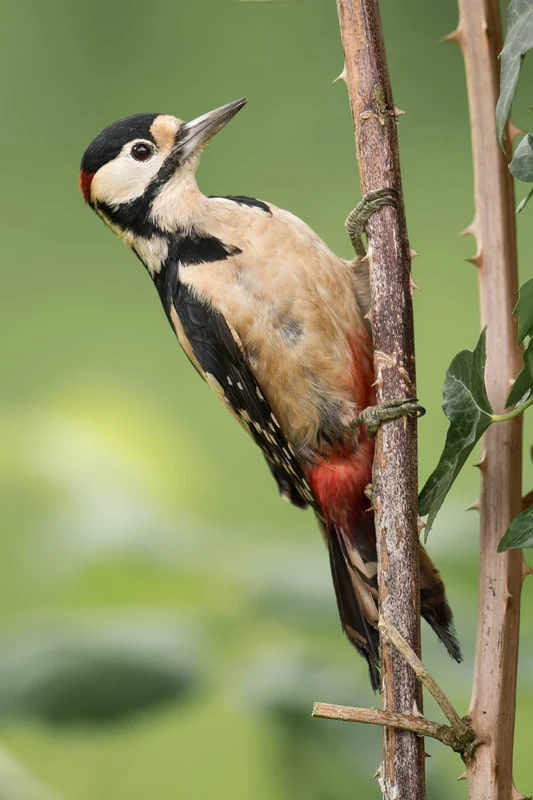

Brood parasitism
How cowbird chicks keep begging
We ask how muscle fatigue resistance and early social conditions shape the way brood-parasitic nestlings compete for food.
Explore brood parasitismCal Poly · San Luis Obispo
We study how muscles, neural circuits, and development shape the signals animals use to compete, communicate, and survive.

Research
We combine field recordings, muscle physiology, and comparative analyses to understand how animals produce displays and how those displays evolve.
Brood parasitism
We ask how muscle fatigue resistance and early social conditions shape the way brood-parasitic nestlings compete for food.
Explore brood parasitism
Motor sequence evolution
We use woodpecker drumming and kangaroo rat footdrumming to ask how animals control the timing and order of movements across different kinds of displays.
Explore motor sequences
Principal investigator
I’m an assistant professor in Biological Sciences at Cal Poly. I’m interested in how the demands of real behaviors shape the physiology of the animals that perform them.
About Nick and CVStudent research
Explore undergraduate research opportunities, including BegBase, or get in touch about pursuing a master’s project in the lab.